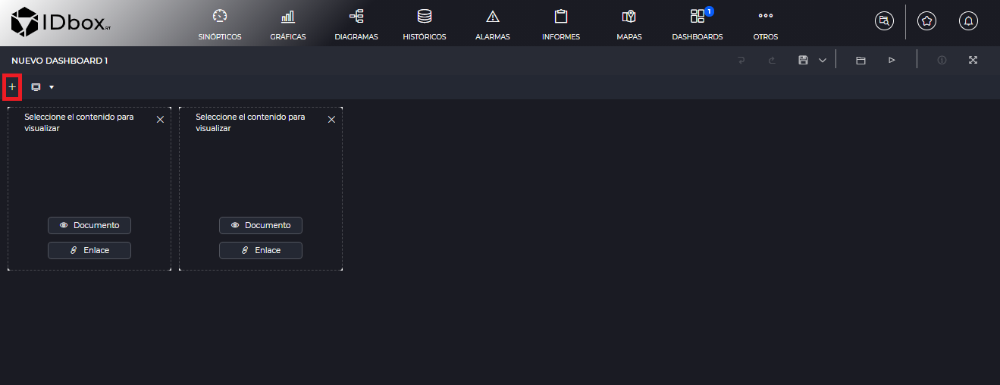
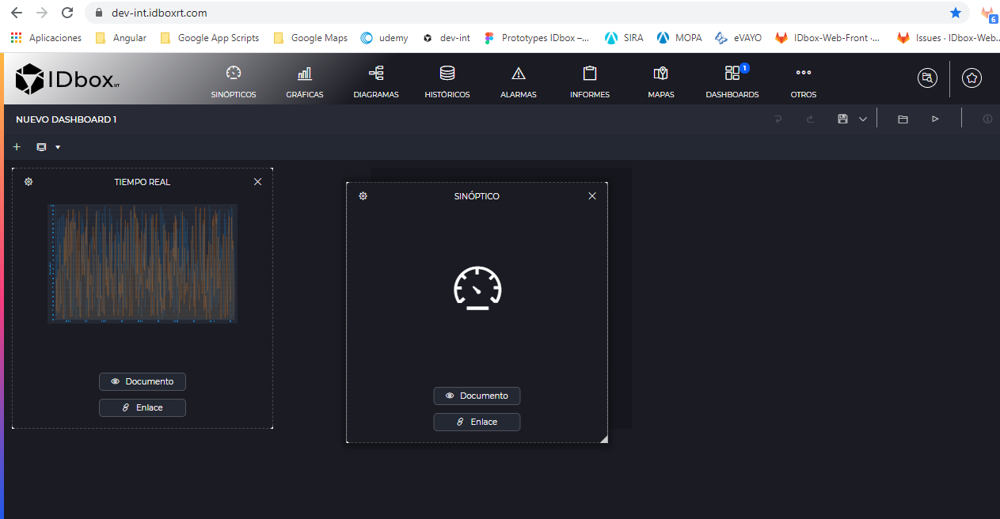
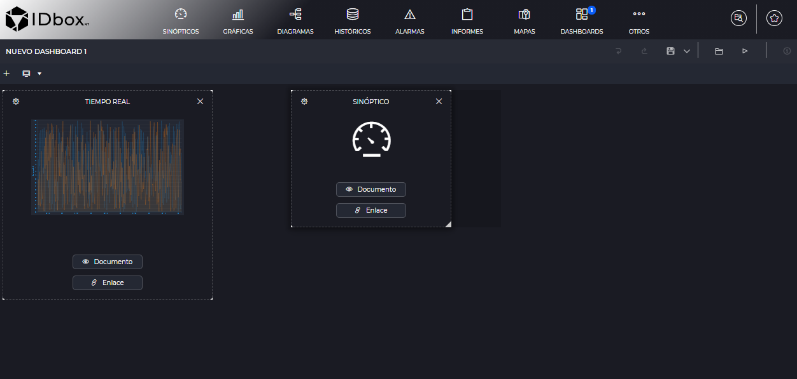
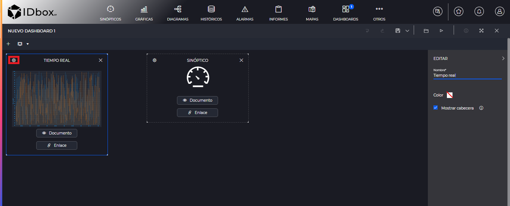
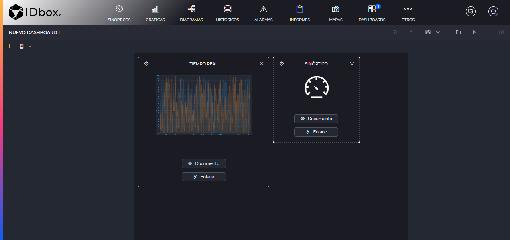

DASHBOARDS
- 1 Introduction
- 2 Editor
- 3 Viewer
1. Introduction
The dashboards will allow us to create dashboards in which we will group the rest of the documents so that we can visualize them at the same time in tabular form.
They can be created from the shortcuts section. Clicking on this option will open a new dashboard.

2 Editor
The dashboard editor consists of a grid that allows us to add elements to a dashboard, delete them or modify them.
Using the save button on the toolbar we can save the dashboard once it has been edited.
2.1 Adding and deleting items
To add an element, click on the + button of dashboards.

This will add an empty element to the dashboard grid. In these elements we will be able to assign document viewers or links to the documents. How each of these elements is displayed in the document viewer is detailed in the viewer section.
To add a specific document to the dashboard click on the “Document” button in that element.

This will open the document selector to select the document we want to add.
To add a link to a document click on the “Link” button.

It will also open the document selector to select the document to which we want to link.
To remove an element from the dashboard, click on the element’s cross.

2.2 Move and resize elements
You can click on an element and hold down to drag it to another place in the grid. The place where the dashboard will be positioned when the left click is released is indicated in a darker color. Also, if there are other elements in the way, they will automatically move to make room for the new element.

We can also resize an element by clicking and dragging from the lower right corner of the element. As when moving elements, it will be shown in a dark color up to where the element will be resized and the resizing will automatically move the elements in its path.

2.3 Configuration options
Click on the configuration button on an element and a right panel will open with the options that can be modified.

The options are as follows:
- Title: We will be able to modify the title of the element, which by default will be that of the document to which it refers.
- Color: We will have the option to modify the color of the element. In the case of a document viewer, the color of the header will be modified. In the case of a link, the color of the whole element will be modified.
- Show header: If this checkbox is unchecked, the header with the document title will not be shown. Keep in mind that if we do this we will lose access to the document link when we are in the viewer, if the element is a viewer instead of a link.
- Refresh time: It will allow us to refresh the document automatically. We will indicate the refresh period. This option is only available for historics, alarms and graphs (not those of real time, since by their nature they are automatically refreshed).
We will also be able to quickly rename elements without opening the right panel, simply by clicking on the title of the element in the box itself.
2.4 Types of views
Since a dashboard may prefer to be viewed in a different size or layout on a mobile device, the following views are defined:
- Web/Tablet View: refers to the configuration that the dashboard will have for viewing on the web or on a tablet that has the IDboxRT mobile application.
- Mobile View: Viewing that the dashboard will have on a smartphone that has the IDboxRT mobile application.
If we click on the drop-down list of view types, we will see these options:

Both mobile and web dashboards will have the same elements. For the mobile view, the window will be smaller, as if it were a mobile device:

3 Viewer
When opening a dashboard document or clicking on the “Preview” button in the editor toolbar. We will see the dashboard in viewer mode, with the elements we have placed and their configuration.

It is worth noting how the different types of elements that the dashboard can have will be displayed:
- Empty dashboard elements will be displayed with a gap as if there were no element.
- Document type elements will display the document viewer in the specified region.
- Documents of link type will create a button that when clicked will open the document.